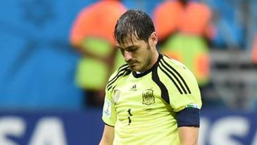

De heroe a villano

El partido más intranscendente de España en los últimos años cerrará el lunes (18 horas) su participación en el Mundial de Brasil 2014, en la despedida anticipada de un ciclo lleno de triunfos, frente a Australia en el Arena da Baixada de Curitiba, en el que Vicente del Bosque transformará su alineación titular.